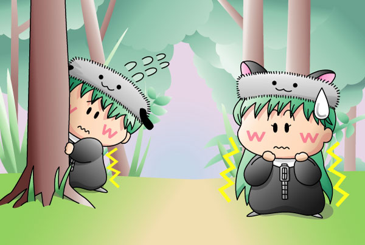

アンリ「グルミの森へようこそ…」 ぷるぷるぷる…。
センリ「ようこそ…」 ぷるぷるぷる…。
警戒心の強いグルミの森の住人たちです。あまり歓迎されてないというか怯えてます。何をするにも話すにも波長が合うアンリとセンリは、見てる方も癒されますね～。
結構昔に描き始めて途中で放置していた絵だったのですが、このたび何とか完成させました。森の細かい草木を描くのは根気が必要ですね（たいして細かくないか^^;）。それと、二人の帽子のデザインが微妙に異なっていることは、実際に描くまで気が付かなかったりします。
楓のマイクがなくなったことで妖精界が舞台になることがない今、二人の次の出番は果たしてあるのかないのか…。
(2004/1/8)